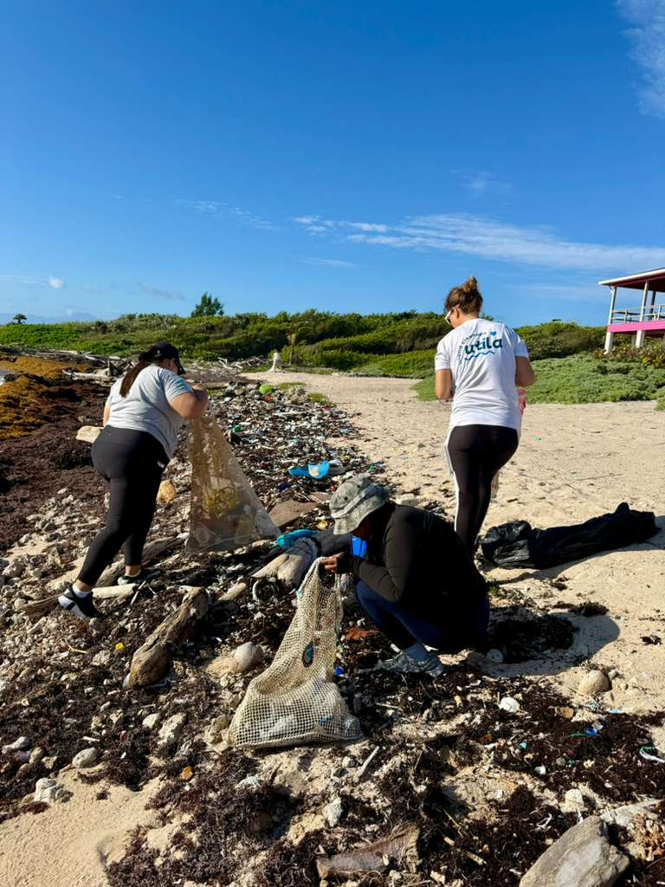

We organize weekly beach cleanups to reduce pollution, protect local ecosystems, and strengthen environmental awareness through action.
Utila Island Cleanups is committed to protecting the beaches of Utila, Honduras through weekly cleanups and responsible waste management. Every Wednesday morning, we take action to preserve vital coastal ecosystems for our community and for the wildlife that depends on them, including sea turtles and the endemic Swamper iguana.

Cleaner beaches help keep trash out of the ocean, reduce harm to marine life, and protect fragile coastal habitats around Utila.
We coordinate weekly cleanups, provide materials and logistics, and track measurable impact over time through transparent reporting.
Our mission is made possible through the support of dedicated local partners and sponsors.